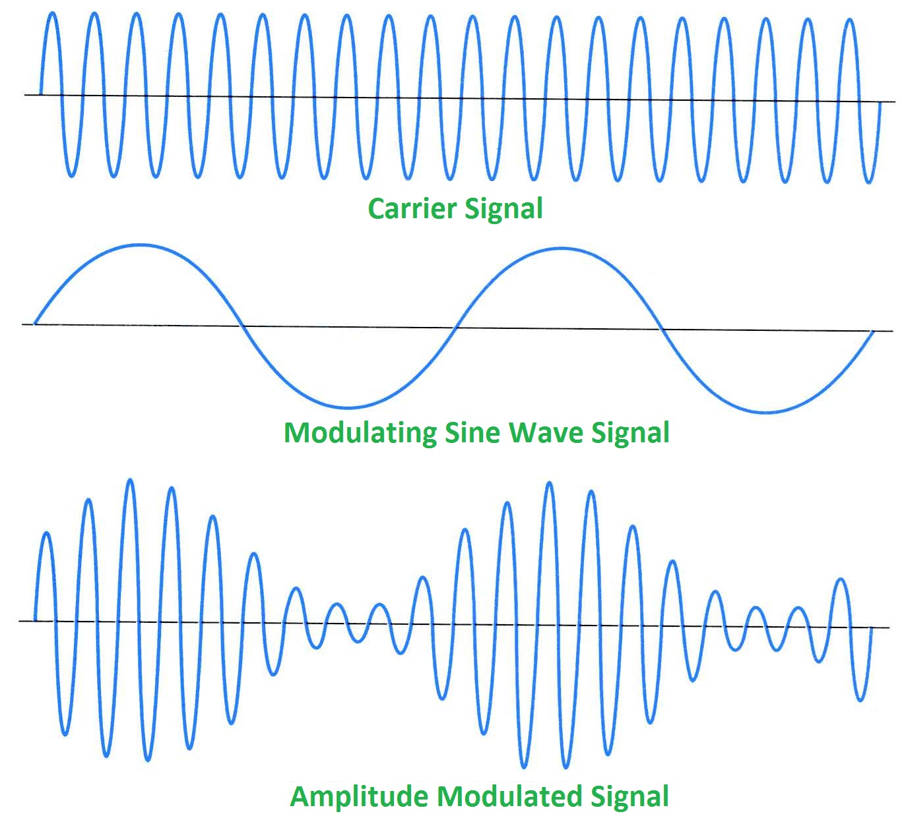
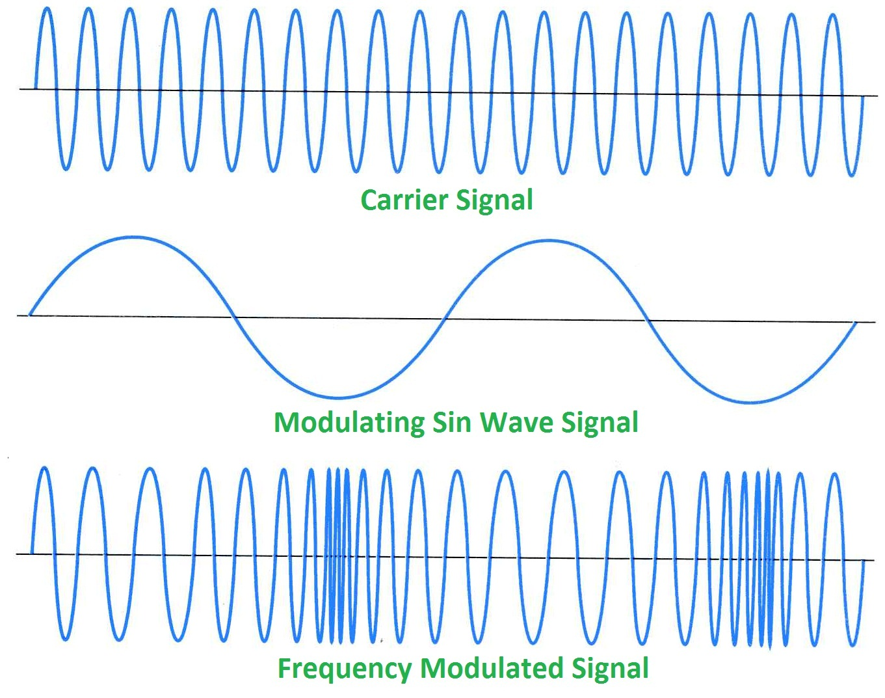
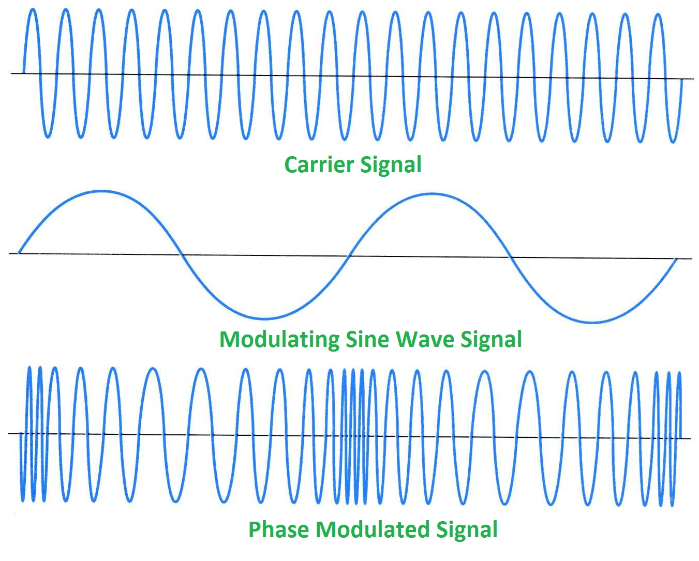

Principles of Communications Networks¶
- Fast fading
- High Doppler spread, symbol time > Coherence time, delay spread, multipath
- Slow fading
- Low Doppler spread, symbol time < Coherence time, shadowing
checksum 可以偵測奇數個錯誤，但不知道錯在哪，也不能偵測偶數個錯誤
- CRC 可以知道錯在哪
- the common use of a CRC or better integrity check at layer 2, below both TCP and IP, such as is used in PPP or the Ethernet frame.
- 有硬體支援，比較快
TCP checksum (weak check) (不是 TCP CRC)
The TCP checksum is fairly weak, but considered good enough for a reliable stream protocol. Often, there are more robust checksums being performed at the data link layer - i.e., ethernet (IIRC) uses CRC-32.
TCP contains a checksum and the TCP/IP stack will detect broken packets. So you don’t need to implement any error detection algorithms on your own unless you want to.
- http://stackoverflow.com/questions/8269693/crc-checking-done-automatically-on-tcp-ip
- http://noahdavids.org/self_published/CRC_and_checksum.html
convulutional codes
00 => 輸入 1 => 10
+----+ 1/11 +----+ 1/01 +----+
| 00 | ---> | 10 | ---> | 11 |
+----+ +----+ +----+
| 0/10
v
+----+
| 01 |
+----+
Cyclic Redundancy Check (CRC)¶
802.11 用 CRC-32 (32 bits)
Interleaver¶
克服 burst errors (一瞬間干擾很大) (不連續地錯很多 bits)
6 bits + 2 parity bits => 8 => 16 = 8 * 2 => 2 blocks
interleaving 會把連續的錯誤分到不同 block，可以利用各 block 的 parity bit 做 correction
- 不用更多 redundant bit
- 需要一點 interleaving 時間
- error rate 不高時不需要做 interleaving
- 有線的 error rate 允許 : 1/10^5
- 無線的 error rate 允許 : 1/10^12
Turbo Code¶
- 0 => 000
- 1 => 111
- hard decision : 一個 range 算 1，多數決
- soft decision : 加起來，看是大於還小於 0，把 error 平衡掉
電壓 : -1.5, -1.5, -1.5 => 多數決 => -1.5, 0.2, 1.3
Unit 1 - Background and Preview¶
通訊是由三個基本元件和兩個基本的溝通方式而組成
基本元件 :
- Transmitter
- Receiver
- Channel
溝通方式 :
- Broadcast (radio、TV)
- Point-to-Point (telephone)
而溝通中含有兩大資源 :
- Transmitted power
- Channel bandwidth
Signal to noise ratio (SNR)
- received signal 的 power 除以 noise 的 power
- 通常用
dB為單位 - SNR=1000 等同於 30 dB (1000 = 10 的 3 次方，3 * 10 = 30 dB)
from math import log
def SNR_to_dB(number):
return 10 * log(number, 10)
def dB_to_SNR(number):
return 10 ** (number / 10)
設計 Communication System 的目的是要能夠有效率且可靠地在 noisy 的 channel 傳送 signal， 因此會有以下限制 :
- 允許的 transmit power
- 可用的 channel bandwidth
- 負擔得起的建構花費
Communication Network
- Circuit switching (telephone)
- 會形成專線佔用
- Packet switching (IP)
- 資料送出來時才取得路線權，路線可能會變動
Internet
把 Communication Network 延伸，形成 Heterogeneous network (HetNet)
- OSI
- TCP/IP
Communication Channel
- Guided-propagation channel
- Telephone channels
- Coaxial cables (同軸電纜)
- Optical fibers (光纖)
- Free-propagation channel
- Wireless broadcast channels
- Mobile radio channels
- Satellite channels
Modulation
要把我們的資料傳遞到另一個地方需要一個載體， 而我們把資料放到載體上就能傳送。 在我們接下來要探討的通訊中，我們用電磁波作為載體， 而把資料放到波上的技術我們稱為 Modulation (調變)， 而從波裡取出資料的技術則稱為 Demodulation (解調)。
資料 -> Modulation -> 波 -> 傳送 -> 接收 -> Demodulation -> 資料
這邊回憶一下波的性質， 波有三個屬性 :
- Amplitude (振幅)
- Frequency (頻率)
- Phase (相位)
這代表說我們在把資料放到波上的時候有三個地方可以動手腳， 調振幅的稱為 AM (Amplitude Modulation)，調頻率的稱為 FM，調相位的稱為 PM。
  {kind=link}
{kind=link}
{kind=link}

- Continuous-wave modulation
- 用
sine 波當作載體 - Varying amplitude: amplitude modulation (AM)
- Varying frequency: frequency modulation (FM)
- Varying phase: phase modulation (PM)
- 用
- Pulse modulation
用
方波當作載體Periodic sequence of rectangular pulses is adopted as the carrier
- Analog modulation
- Varying amplitude: pulse-amplitude modulation (PAM)
- Varying duration: pulse-duration modulation (PDM)
- Varying position: pulse-position modulation (PPM)
- An example of PAM
- Digital modulation
- Difference to analog modulation: quantization
Multiplexing
- Frequency-division multiplexing (FDM)
- Time-division multiplexing (TDM)
- Code-division multiplexing (CDM)
Analog Communication

(modulation & demodulation)
Digital Communication

(encoder -> modulation -> demodulation -> decoder)
- Source encoder
- Remove redundant information from the message signal to form source code word
- Actually it’s data compression, e.g. Zip
- Channel encoder
- Some redundant bits to make detection or correction at receiver side possible
- The formed signal is named channel code word
- Examples: Turbo code and LDPC code
- Modulator
- Varying one or more properties of a periodic waveform (called carrier signal) with a modulating signal (typically contains information to be transmitted)
- The sequence of analog symbols produced by the modulator is called a waveform
Shannon’s Information Capacity Theorem
reliability 通常用 bit error rate (BER) 來衡量
理想的 Zero BER
C = B ln (1 + SNR)
- C : information capacity of the channel in bits/sec
- B : channel bandwidth in Hz
- SNR : signal to noise ratio
雖然理想值當然是辦不到的，但是我們可以拿來衡量效率
η = R/C
η : efficiency
R : actual signal rate
- A basis for the trade-off between B and SNR
- Comparison of noise performance for different modulation schemes
Unit 2 - Channel coding and error control¶
- Errors
- Single bit
- serial data transmission 中不常發生
- parallel data transmission 較常發生
Burst errors
- redundancy check
VRC (垂直) : parity check, 多 1 個 bit
LRC (縱向) : 不同區塊的 data 的同個位元拿去生 parity bits，形成新的 data
- CRC (循環) : 基於二進位除法，附加 parity bits 上去，讓結果可以被事先準備的數字整除
- CRC-X 可以偵測奇數個的所有錯誤、長度小於等於 X 的所有錯誤、絕大多數 長度大於等於 X 的所有錯誤
- CRC-12 可以偵測奇數個的所有錯誤、長度小於等於 12 的所有錯誤、99.97 % 長度大於等於 12 的所有錯誤
- CRC-32 用於 Ethernet 和 Token Ring
- redundancy check
- Parity check
- 有 two dimensinoal 的 parity check
Cyclic redundancy check (CRC)
Checksum
- error correction
- 發現後重傳
- 接收端自己修正
- error correction
- Hamming code : 流行的方式之一，可修正一個 bit
- Data Link Layer
- Packetizing
- Addressing
- Error Control
- Flow Control
- Access Control
- [Coursera] coding theory
[流程]
data -> source coding -> channel coding -> modulation -> transmitter
data <- source decoding <- channel decoding <- demodulation <- receiver
Forward Error Correction (FEC)
FEC 想做的是多傳些救援資料，如果發生錯誤時接收端可以自己修正，不需要重傳
- Block codes
- Cyclic codes
- Reed-Solomon codes (Not covered here)
- Convolutional codes
- Turbo codes
Hamming Distance : 計算兩個資料相差多少修改量
Error Correction
minimum‐distance decoder 可以更正 e 個 errors，e 不超過 1/2 (d_m -1)，d_m 是 minimum distance
- d_m 是奇數 : error correction
- d_m 是偶數 : error detection
Linear Block Codes
如果一個 block code 裡的任兩個 code 可以用 modulo-2 來產生第三個裡面的 code 的話就稱為 linear
k 個位元的資料進來後，加上 n-k 個位元的檢查，形成 n 個位元的資料 (parity bits 會放在前面)
[transmitter] m (m_1 ... m_k) (message vector) -> G (generator matrix) -> c (code vector)
[receiver] c (code vector) -> H (parity check matrix) -> 0 (null vector)
C = mG
表示 : (n, k)
資訊會被切割放進長度是 k 的 block
有 n-k 個 parity bits
code rate 為 k/n
- G : generator matrix
- dimension : k x n
- G = [I_k | P]
P = rem[x^{n-k+i-1} / g(x)]
[?] 補計算的圖片
G = [I_k | P]
H = [P^T | I_{n-k}]
[流程]
先需要知道資料有 k 個 bits，加 parity bits 後想傳 n 個 bits 出去， 接著需要一個 g(x) 多項式，藉此可算出 G 這個把 k 個 bits 轉換成 n 個 bits 的矩陣， 同時也可以得知 H 這個檢查矩陣，收到後乘上 H 產生出 n-k 個 bits， 假如都是 0 的話代表沒有錯誤，若有錯誤則去找看看結果是在 H^T 的第 i 列， 代表著收到的資料的第 i 個 bit 出現錯誤，把該 bit 轉換後更正。
Hamming code 的 d_min 是 3 (minimum hamming weight)， 代表可發現的錯誤範圍為 3-1 = 2 個 bits， 可更正的範圍為 (3-1)/2 = 1 個 bits。
[另]
另外的算法，當取得 g(x) 後，要計算 G 時，可以使用矩陣列運算， 例如在 (7, 4) 的狀況中，當 g(x) = 1 + x + x^3，也就是 [1 1 0 1] 則計算為 : (利用 shift 的方式，每次向右 shift 一位)
[ 1 1 0 1 ] 0 0 0
0 [ 1 1 0 1 ] 0 0
0 0 [ 1 1 0 1 ] 0
0 0 0 [ 1 1 0 1 ]
=> 整理成左邊為單位矩陣 (或是右邊)
(多出來非單位矩陣的部份，和原資料乘起來後就是 parity bits)
1 0 0 0 1 1 0 1 1 0 1 0 0 0
0 1 0 0 0 1 1 0 1 1 0 1 0 0
0 0 1 0 1 1 1 or 1 1 1 0 0 1 0
0 0 0 1 1 0 1 1 0 1 0 0 0 1
=> 這就是矩陣 G 啦
Hamming Code
single‐error correcting
- block length : n = 2^m - 1
- parity bits : m = n - k
- message bits : k = 2^m - m - 1
- m >= 3
- 撰寫時為 [低位 ... 高位]
Hamming Weight
定義：一串符號中非零符號的總數
在二進位中，整個二進位串中有幾個「1」就表示其 Hamming Weight 為多少
Cyclic Codes
可以修正 single/double error 和 burst error
linear block codes 的子類別
易於 encode/decode
利用一個 shift register
- cyclic code 需要符合兩個條件
- [Linearity property] 兩個 code words 相加出來的是另一個 code word
- [Cyclic property] 一個 code word 的 cyclic shift 還是一個 code word
Cyclic Redundancy Check (CRC)
- 有硬體支援
- 用於 Ethernet
- 802.11 用 CRC-32 (32 bits)
- CRC 很常用
- 被加入的 bit sequence 稱為 frame check sequence (FCS)
[多項式的性質]
- 不可以被 x 整除 : 保證當 burst errors 的長度和多項式的 degree 相同時可以被偵測
- 可以被 x + 1 整除 : 保證 burst errors 影響了奇數個 bits 時能被偵測
Convolutional Codes
在 GSM 中實際最常用到的 channel codes
- Decoding strategy: Viterbi algorithm
Interleaver
Protect data from burst errors
- Interleaver
- Block interleaver: most commonly used.
- Random interleaver
- Circular interleaver
- Semirandom interlever
- Odd‐even interleaver
- Optimal interleaver
分散 burst errors，不是修正
不需要額外的 redundancy bits 或頻寬
delay 會增加
把原本要傳送的資料排列後改變順序，收到後再排回去
Turbo Code
效率比其他 channel code 都還接近 Shannon limit 理論值
利用兩個相同的 RSC (recursive systematic convolutional)，parallel 地接起來
- example of turbo code encoder
- 第一個 RSC encoder 直接用進來的 bit stream
- 第二個 RSC encoder 用 interleaver 過的
- example of turbo code decoder
- decode 一個來取得初步的資訊
- 基於前面的資訊，第二個 RSC decoder 取得更精確的資料
- 回饋給第一個 RSC 來增加正確率
- 使用 soft-decision
ARQ
- Stop-and-Wait
- 確定都回 ACK 正確送到後才送下一個封包
- 有 Error 回 NAK
- Go-Back-N
- 收到 NAK 發現 Error 後把那之後的封包都重傳
- Selective Repeat
- 收到 NAK 後只把錯誤的封包重傳，但是封包順序會亂，需要多 Buffer 來排好
GBN 不會比 SR 好
Unit 3 - Modulation¶
- Analog modulation
- AM (Amplitude)
- FM (Frequency)
- PM
- Digital modulation
- ASK (Amplitude Shift Keying)
- 疊方波
- 屬於 1 的那段 baud 的振福會比較大
- FSK (Frequency Shift Keying)
- 屬於 1 的那段 baud 的頻率會比較高
- PSK
- 波型會變
- 0、1 轉換時波型也會直接轉換
- QPSK (Quadrature Phase Shift Keying)
- BPSK 的話在圓上只有兩個點，QPSK 的話有四個點
- QAM (Quadrature Amplitude Modulation)
AM + PSK
- xQAM
- 畫出 x 個點排成的圖型，以中心為原點，出去的距離為 AM 所調的，出去的角度為 PSK 所調的
- 64QAM 的每個 symbol 會傳 6 bits (2^6 = 64)，baud rate 是 1200 Hz 的話，每秒 6 * 1200 = 7200 bits
- x 不能無限提高，x 是和 transmission rate 相關的變數，提高的話在相同能量下，每個點之間的距離會減小，造成不好區分，使得錯誤率上升，要增加距離的話就要增加輸出能量
- x 通常等於 2 的整數次方
Unit 4 - Mobile Radio Propagation¶
無線網路跟有線網路比起來狀況更差，有許多問題需要處理， 其中一大問題就使 BER (Bit Error Rate) 相對高很多 (會到達 10^-3)， BER 如此高的原因有 atmospheric noise (大氣中的噪音)、multipath propagation (多個傳送路徑)、interference (干涉) 等等。 除此之外還需要 spectrum licensing (頻譜使用許可)，而後還需要處理 Dynamic topologies 產生的 hidden terminals problem，以及 energy 造成的限制。
無線網路中的 bit errors 會突然爆發 (bursts)， markov chain model 的模擬已經充份的顯示出無線網路的 bit error modeling。 此 model 包含兩個 state，一個 Good，一個 Bad，兩個變數定義其中個轉換， 下一個 state 只跟現在的 state 有關，跟以前的 state 無關 (memoryless)。
無線網路中造成接收端出現錯誤的因素有很多， 其中一般空曠處的傳送就會有 loss， 再來由於可能會有移動的狀況，所以會有都卜勒效應 (Droppler Shift)， 實際傳送中也會碰到反射 (reflection)、繞射 (diffraction)、散射 (scattering)， 造成多重路徑的傳送。
對於電磁波頻譜的選擇也有好有壞， 高頻段的話能量較高，但是覆蓋範圍較小， 低頻段的話能量較小，但是覆蓋範圍較大。
[Shannon’s Formula]
Shannon’s Formula 是用來推測頻道之可用容量， 重點在於針對已知頻寬及頻道之訊號雜訊比 (也就是受雜訊干擾之情況) 進行推測
W = B log_2(1 + r)
W 是 bit rate 的上界
B 是 channel 寬度 (Hz)
r 是 SNR (Signal to noise ratio)
無線電波的種類
- Ground
- 依照地表的起伏，用於長程導航，低於 2 MHz
- Space
- 只直線進行，用於手機、Two-way radio、雷達，30 MHz ~ 3000 GHz
- Sky
- 發送到游離層後會反射回來，常用於業餘無線電和長程飛機、船隻溝通， 20 ~ 30 MHz
Propagation effect
- Reflection (反射)
- 發生於電磁波碰到和波長相比大很多的物體
- fast fading 成因
- coherence time
- Scattering (散射)
- 發生於訊號被相似大小級數的物體阻礙，訊號會轉向不同方向
- Diffraction (繞射)
- 發生於電磁波碰到 impenetrable object (堅硬物體？)，其後會產生另外一個波
- 又稱為 Shadowing
- 低頻率較容易發生
- shadow 的區域通常很大，會讓訊號衰弱的速度變慢，故稱為 slow fading
- Free space path loss
- 收到的能量根距離平方成反比
- Multipath propagation
- 前面提到的 reflection
- 會造成訊號失真 (small‐scale fluctuations)
- 接收端第一次收到和最後一次收到間的時間差稱為 channel’s delay spread
- 被稱為 fast fading 或是 small-sacle fading
- 如果 Line-of-sight (直射信號) 存在的話，稱為 Rician fading
- 如果 Line-of-sight (直射信號) 不存在的話，稱為 Rayleigh fading
- Large‐scale propagation model
- Path loss
- Free space propagation model
- Propagation mechanism
- Indoor propagation model
- Outdoor propagation model
- Small‐scale propagation
- 訊號在各個性質上有小幅的變化
- Multipath : 時間
- Doppler : 頻率
Intersymbol Interference (ISI)
當 multipath 的情形發生時，接收端會率陸續收到多個訊號，除了第一個直接傳到的訊號外， 後面的訊號就像是雜訊一樣，會讓辨識變困難，稱為 Inter Symbol Interference
Slow v.s. fast fading (coherence time)
Coherence time is the time duration over which the channel impulse response is considered to be not varying
Flat fading v.s. selective fading (coherence bandwidth)
The coherence bandwidth measures the separation in frequency after which two signals will experience uncorrelated fading.
Free Space Propagation
Path Loss
Signal bandwidth > coherence bandwidth (wideband): frequency‐selected fading
Signal bandwidth < coherence bandwidth (narrowband): flat fading
- mutltipath time delay spread (小規模的漸弱)
- Flat fading
- Signal bandwidth < channel bandwidth
- Delay spread < symbol period
- Frequency selective fading
- Signal bandwidth > channel bandwidth
- Delay spread > symbol period
- droppler spread (小規模的漸弱)
- Fast fading
- High Doppler spread
- Coherence time < symbol time
- Channel variations 比 baseband signal variations 快
- Slow fading
- Low Doppler spread
- Coherence time > symbol time
- Channel variations 比 baseband signal variations 慢
Fast fading: High Doppler spread, symbol time > Coherence time, delay spread, multipath Slow fading: Low Doppler spread, symbol time < Coherence time, shadowing
[Question]
What cause fast fading ?
fast fading 是由於 multipath 和 Doppler effect 所造成訊號強度快速變化
What cause slow fading ?
slow fading 是在路途中有高低不一的障礙物遮檔，使得移動期間訊號緩慢變化
slow fading 是因為 diffraction 造成的
fast fading 是因為 reflection 造成的
slow fading : 長距離的移動期間訊號平均值等級的變化
由於行動使用者活動距離超過波長許多，當使用者通過不同高度的建築物、空地、十字路口等等，相當於城市環境在改變，在這長距離的移動期間，接收訊號平均功率準位會有一平緩的變化，顯示此慢速改變的波形
coherence time > delay constraint
fast fading : 在短距離內的移動造成訊號強度變化的現象
coherence time < delay constraint
萊斯衰減(Ricean Fading)和瑞雷衰減(Rayleigh Fading)
path loss, delay spread, fast fading
path loss 會造成訊號衰減
delay spread 是一段時間內先後收到來自不同路徑的訊號，會產生 fast fading
fading 會造成訊號失真，故都會讓收到的訊號出問題
ISI (Intersymbol Interference)
symbol 間有來自不同路徑所產生的不同強度的子 symbol，對於一開始收到的 symbol 而言，後面收到的子 symbol 就像是雜訊，會影響到整個傳輸品質
Unit 5 - Cellular Concept¶
Cell Area : 基地台訊號涵蓋的範圍
理想是圓形，但現實中不可能，計算上可能會用六角形、正方形、三角形代替
- 訊號強度在出了天線後就會急速下降
Handoff area : 在兩個基地台間，訊號強度夠強，可以互相切換的區域
Ping-pong effect : 對某基地台的訊號強度已經超過另一個基地台一定的量，可以正式切換過去，可作為不斷在基地台間來回時的切換門檻
[cellular mobile networks] 由於 frequency reuse，在一地區就會有多個 cells 使用相同的頻帶組， 這些 cells 稱為 co-channel cells，而這些 cells 間互相干擾的訊號就稱為 co-channel interference。 要減少這種情況發生，其中一種解法是做 Cell Splitting，把大 Cell 切成小 Cell，並且調整 power， 另一種是做 Cell Sectoring
Queueing model¶
M/M/S/S
- M = Exponential Arrival Pattern
- Poisson 分布，參數為 λ
- M = Exponential Service Pattern
- Exponential 分布，參數為 μ
S = Server Number
S = Serving People
= Waiting People (無限制的話可省略)
Poisson
Exponential
Server num
Serving people
Unit 6¶
Transmit Opportunity (TXOP)
DCF (Distributed Coordination Function) (分散式協調功能)
PCF (Point Coordination Function) (集中式協調功能)
- Mutiple Access
- Contention (爭奪)
- ALOHA
- CSMA
- Conflict Free
- FDMA
- TDMA
- CDMA
Pure ALOHA¶
最早的 random access 方法，1968 年在美國夏威夷大學開發，1971 年成功建立。
- 有資料 (frame) 就直接送
- 送完等 ACK，等待時間的上限為兩倍的最大 propagation delay，等不到就重傳
- 碰撞時，雙方都等一個 random time
- 通道使用率 : 18.4 %
Slotted ALOHA¶
- 把頻段在時間上切割，每次只能分段的開始處傳送，傳送的資料只能小於等於一個分段，以減少衝突的發生
- 可確保成功送出後不會有人來碰撞
需要一個同步機制
通道使用率 : 36.8 %
CSMA (Carrier Sense Multiple Access)¶
和 ALOHA 相比，在傳送前會先去看通道的狀況
- Nonpersistent : 機率性等一段時間
- 降低碰撞機率
- 浪費空間
Persistent : 一直聽
p-Persistent : idle 時，有 p 的機率會傳送，接著有 (1-p) 的機率會 delay 一段時間。busy 的話就繼續聽。
- CSMA
- Non-presistent
- Unslotted
- Slotted
- Presistent (1-persistent, p-persistent)
- Unslotted
- Slotted
- 有資料 (frame) 就 先聽通道狀況
- busy => 一定等
- idle => 可能送出
送完等 ACK，等待一段時間，等不到就重傳
碰撞時，雙方都等一個 random time
- 使用率取決於 frame 的長度和 propagation time
Nonpersistent CSMA¶
- 有資料 (frame) 就 先聽通道狀況
- busy => 等一段時間
- idle => 送出
送完等 ACK，等待一段時間，等不到就重傳
碰撞時，雙方都等一個 random time
1-Persistent CSMA¶
- 有資料 (frame) 就 先聽通道狀況
- busy => 繼續聽
- idle => 送出
送完等 ACK，等待一段時間，等不到就重傳
碰撞時，雙方都等一個 random time
[-] 多個人在聽的時候一定碰撞
p-Persistent CSMA¶
- 有資料 (frame) 就 先聽通道狀況
- busy => 繼續聽
- idle => 有 p 的機率會送出 ， 接著有 (1-p) 的機率會等待一段時間 (通常是最大的 propagation delay)
送完等 ACK，等待一段時間，等不到就重傳
碰撞時，雙方都等一個 random time
CSMA/CD¶
發現碰撞後發出 jamming signal 通知，用於 Ethernet
- 有資料 (frame) 就 先聽通道狀況
- busy => 繼續聽
- idle => 送出
2. 如果碰撞發生的話就發出 jamming signal 通知大家，叫大家不要再送了 2. 送完等 ACK，等待一段時間，等不到就重傳 3. 碰撞時，雙方都等一個 random time
CSMA/CA¶
IEEE 802.11
no collision
SIFS (Short Interframe Space) : wireless interface 收到 frame 後處理完再回傳，這過程所需的時間，差不多需要 1x μs
- [DCF protocol] DIFS = SIFS + (2 * Slot time)
- DCF Interframe Space
- 差不多需要 3x μs
- 在 DIFS 期間偵測到都是 idle 的話才可以傳送
- Contention window
- 以 Slot Time 為單位，隨機取 n 個 Slot Time 形成 Contention Window 進行退讓，預降低可以開始傳時的碰撞機會
在無線網路的狀況下，發生碰撞的成本太高了